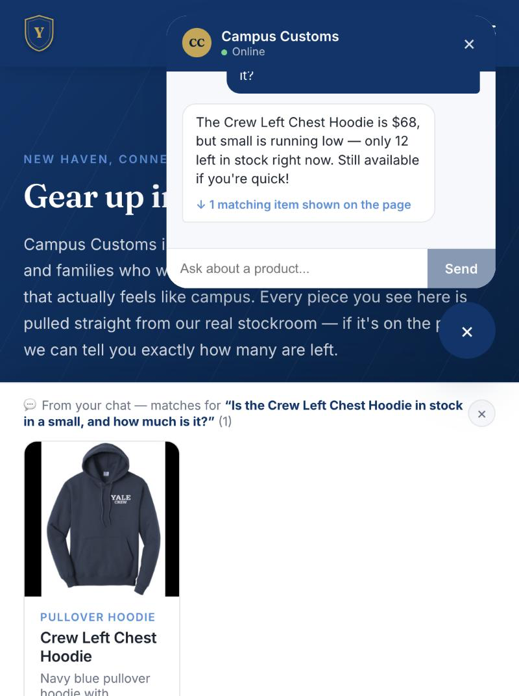
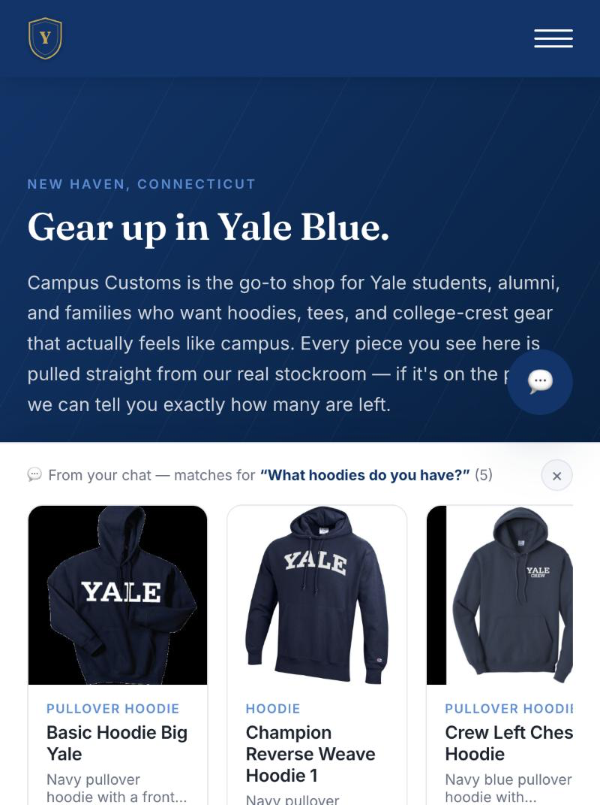
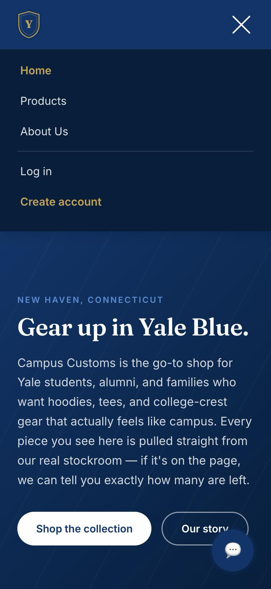

Chat checks real inventory — honest stock and price from the DB
Asked the chat: "Is the Crew Left Chest Hoodie in stock in a small, and how much is it?"
✓ Verified against campus_customs.db
The reply says "$68, small is running low — only 12 left in stock."
Both numbers were checked directly against the database:
catalogue.price = 68.0 and inventory has
product_id='crew-left-chest-hoodie', size='S', quantity=12. Neither number
is invented — both come from the same three lookup tools
(get_descriptions/get_prices/get_stock) documented
in output/harness.md.
M: 0 right before S: 12 in
what the model reads), and the candidate list handed to the model had silently lost
search_catalogue's relevance ranking, so the right product could land
anywhere among several similarly-named ones. Fixed both at the data layer, re-ran the
identical prompt 4 times afterward (4/4 correct), then took the screenshot above. Full
writeup in output/harness.md, "Post-launch fix" section.
Dynamic search-result cards after a category question
Asked the chat: "What hoodies do you have?" — no product named, just a category.
✓ Real product cards, not text-only
The agent searched the catalogue and returned 5 real hoodies; the front end rendered
them as an actual "From your chat" shelf on the page itself — using the exact same
ProductCard component the Products grid uses, with real photos, names, and
prices, each one still linking to its own product detail page. This is the Problem 7
API contract (agent returns structured matches, front end renders them) working live.
Usability feature (Problem 9): mobile navigation actually reaches every link
Resized the browser to a real phone width (375px) and opened the nav menu.
✓ "Log in" reachable — previously it was not
Before this fix, the nav's mobile rule hid "Log in" and "Log out" outright with
display: none and nothing to replace them — a shopper on a phone had no way
to reach either. The screenshot shows the fix: a real hamburger menu that lists every
link the desktop nav has, including "Log in," fully tappable. Full before/after detail
in output/usability.md.